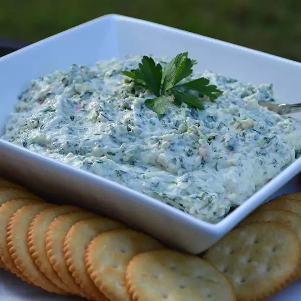

Amazing No Cook Spinach Artichoke Dip

Description
This dip was the result of endless combinations to try to come up with some dip that I didn't have to cook for work.
Serve immediately or it is even better if you leave it in the refrigerator overnight. Store in nonmetallic air-tight container.
The only kitchen utensil you need is a food processor.
Best with pita chips, crostini, or some kind of chip with less salt.
Ingredients
- 1 sweet onion, cut into quarters
- 8 cloves garlic, or more to taste
- 1 (14 ounce) can artichoke hearts, drained and chopped
- 1 (10 ounce) package frozen chopped spinach, thawed and drained
- 1 (8 ounce) package shredded Parmesan cheese
- 1 (1.4 ounce) package dry vegetable soup mix (such as Knorr®)
- 1 (8 ounce) package reduced-fat cream cheese, softened
- 1 cup reduced-fat mayonnaise
- 1 (8 ounce) container reduced-fat sour cream
Steps
- Blend onion and garlic in a food processor until finely chopped.
Add artichoke hearts; process until chopped. Add spinach, Parmesan cheese, and vegetable soup mix; process until well incorporated.
Transfer mixture to a nonmetallic bowl.
- Blend cream cheese, mayonnaise, and sour cream in the food processor until smooth;
stir into artichoke mixture.